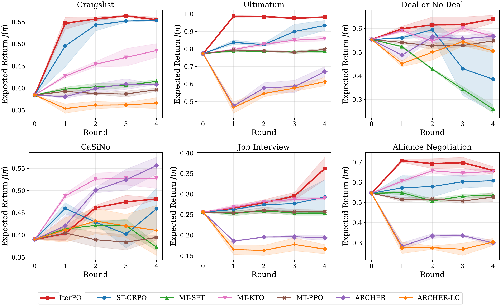

Iterative Policy OptimizationBatch-Online Multi-Turn RL via Single-Turn RL
Meta · FAIR at Meta · Columbia University *Equal contribution
Overview
- On-policy multi-turn RL requires an external environment to respond after every agent turn. Real users cannot be queried during training, and faithful user simulators are hard to build for bespoke conversational tasks.
- Production conversational agents instead operate in a batch-online regime, where the deployed policy $\pi_k$ logs a batch of conversations $\mathcal{D}_k$ and is retrained offline before redeployment.
- This cycle corresponds directly to approximate policy iteration, which alternates between estimating the state-action value function $Q^\pi$ (policy evaluation) and updating the policy to optimize $Q^\pi$ (policy improvement).
- Iterative Policy Optimization (IterPO) carries out both steps with off-the-shelf single-turn RLHF tools. In each round, IterPO fits a turn-level $Q$-function $Q^\pi$ to Monte Carlo returns via supervised reward modeling and then runs single-turn, token-level GRPO with $Q^\pi$ as the reward model. Neither step requires a user simulator or temporal-difference learning.
On-Policy Multi-Turn RL Requires a Simulator
Many conversational agents are built to drive outcomes that are observed only after a multi-turn interaction ends, so optimizing those outcomes is a long-horizon credit-assignment problem. Standard multi-turn RL methods extend on-policy optimizers such as GRPO or PPO to full $T$-turn trajectories $(s_1, a_1, s_2, a_2, \dots, s_T, a_T)$, where $s_t$ is the conversation state at turn $t$ and $a_t$ is the agent’s response. In single-turn RL, the policy samples a complete response on its own. In multi-turn RL, an external environment must supply the next state ${s_{t+1} \sim P(\cdot \mid s_t, a_t)}$ after every response $a_t$. Executable environments can fill this role for coding and web agents during training, whereas conversational agents must rely on a user simulator that is hard to build and validate.
Batch-Online Deployment
Deployed conversational agents are typically updated in rounds rather than continuously. Over each deployment window (e.g., an A/B test lasting days or weeks), the current policy $\pi_k$ interacts with real users and logs a batch $\mathcal{D}_k$ of complete conversations with observed outcomes. The policy is then retrained offline on $\mathcal{D}_k$ to produce $\pi_{k+1}$ for the next deployment. This setting is batch-online because the data-generating policy changes between rounds, while each update is computed offline on a fixed dataset.
Approximate Policy Iteration
Alternating deployment with offline retraining has the same structure as classical policy iteration (Sutton & Barto, 2018). In exact policy iteration, policy evaluation ($\text{E}$) computes the state-action value function $Q^\pi(s, a)$ of the current policy $\pi$, and policy improvement ($\text{I}$) updates $\pi$ to be greedy with respect to $Q^\pi$. By the policy improvement theorem, repeating these exact updates monotonically improves the policy and converges to $(\pi^*, Q^*)$. When the state or action space is too large for exact computation, approximating both steps gives approximate policy iteration (Bertsekas & Tsitsiklis, 1996).
In a batch-online round, the logged dataset $\mathcal{D}_k$ consists of on-policy trajectories collected under $\pi_k$. We can therefore estimate $Q^{\pi_k}$ offline from Monte Carlo returns on $\mathcal{D}_k$ and then run an offline policy improvement step to obtain $\pi_{k+1}$ for the next deployment.
Iterative Policy Optimization (IterPO)
IterPO implements both steps of approximate policy iteration with standard single-turn RLHF tools. At turn $t$, an agent’s action $a_t$ is a complete natural-language response, so computing an exact greedy policy over the response space is intractable. Standard single-turn RLHF optimizers sidestep response-level maximization by operating at the token level, generating completions token by token and updating the policy from scalar sequence-level rewards.
Observation 1 (GRPO as an approximate policy improvement operator). Suppose we have access to the turn-level state-action value function $Q^\pi$ of a multi-turn policy $\pi$. Let $\mathtt{SingleTurnOpt}(Q^\pi)$ denote the idealized single-turn optimizer that maximizes expected $Q^\pi(s, a)$ at every state $s$, and set
In practice, running a token-level, single-turn RLHF optimizer such as GRPO with $Q^\pi$ as its reward model approximates this idealized step for the response-level multi-turn problem. By Theorem 1 in the paper, any updated policy $\pi'$ that achieves higher expected $Q^\pi$-value than $\pi$ at every conversation state is guaranteed to achieve higher multi-turn return from any initial state. Because $Q^\pi$ scores each candidate response directly, this update needs no rollouts of future turns.
Observation 1 assumes access to $Q^\pi$, which we can estimate directly from the conversations logged under $\pi$. In a $T$-turn conversation ending with terminal reward $R$ and discount factor ${\gamma \in [0, 1]}$, for each turn ${t \in \{1, \dots, T\}}$, the logged state-action pair $(s_t, a_t)$ (conversation history and response) has observed Monte Carlo return ${G_t = \gamma^{T-t} R}$, an unbiased target for $Q^\pi(s, a) = \mathbb{E}_\pi[G_t \mid s_t = s,\, a_t = a]$.
Observation 2 (Reward modeling as policy evaluation). Given a batch of on-policy trajectories collected under $\pi$, we form the supervised dataset $\mathcal{D}^\pi_{\mathrm{multi}} = \{((s_t, a_t), G_t)\}$ of logged state-action pairs and Monte Carlo returns. Fitting a reward model on $\mathcal{D}^\pi_{\mathrm{multi}}$ performs multi-turn policy evaluation as a standard single-turn reward-modeling problem:
Because the trajectories are on-policy under $\pi$, this estimate requires no temporal-difference (TD) learning or off-policy correction, which keeps policy evaluation simple when conversation horizons are moderate. For very long trajectories, pure Monte Carlo returns can have high variance, so TD-based evaluation (such as SARSA) may be preferable in that regime.
In each round of IterPO, we fit $Q^\pi$ to Monte Carlo returns from the logged conversations (Observation 2), hold $Q^\pi$ fixed as the reward model for single-turn, token-level GRPO on logged states $s_t$ to obtain $\pi'$ (Observation 1), and deploy $\pi'$ to collect the next batch. Alternating reward fitting and single-turn GRPO instantiates approximate policy iteration directly in IterPO’s single-turn operators.
Putting it all together, the overview diagram below shows how Observations 1 and 2 fit into one complete batch-online round of IterPO.
Evaluation on Multi-Turn Negotiation
We evaluate IterPO across six multi-turn negotiation environments adapted from existing bargaining datasets: Craigslist, Ultimatum, Deal or No Deal, CaSiNo, Job Interview, and Alliance Negotiation. Both agents are initialized from Qwen2.5-7B-Instruct, with the negotiation partner held fixed. We query the partner only during deployment data collection (four rounds of 400 conversations each, with discount ${\gamma = 0.9}$) and never during training.
Craigslist
A vendor and a customer bargain over the price of a listed item. The vendor sees only the listing price, while the customer also has a private target price.
Ultimatum
A proposer and a responder negotiate how to split a fixed pool over multiple turns. The responder can accept, counter, or reject, and disagreement leaves both sides with zero.
Deal or No Deal
Two agents divide a shared pool of books, hats, and balls. Each knows only its own per-item values and must negotiate a split that both sides accept.
CaSiNo
Two campers divide three packages each of food, water, and firewood. Each has private high, medium, and low priorities over the three resources, so both can gain by trading across issues.
Job Interview
A recruiter and a candidate negotiate five coupled terms (salary, holiday days, workplace, company, and position), and the chosen company also scales the value of the position.
Alliance Negotiation
Two stakeholders negotiate a five-issue project deal, each with a private option-score matrix and a minimum acceptable utility threshold (BATNA).

IterPO improves over the base policy in all six environments and achieves the highest held-out discounted return in five of the six (MT-KTO leads on CaSiNo). MT-SFT and MT-PPO stay close to the base policy, while MT-KTO and ArCHer perform better but still trail IterPO on all environments except CaSiNo. The single-turn ablation ST-GRPO (${\gamma = 0}$, which removes future-turn credit assignment) is within one standard error of IterPO on Craigslist, Ultimatum, and CaSiNo, but trails by 0.07 to 0.12 on Deal or No Deal, Job Interview, and Alliance.
| Method | Craigslist | Ultimatum | Deal or No Deal | CaSiNo | Job Interview | Alliance |
|---|---|---|---|---|---|---|
| Base | 0.36 | 0.80 | 0.52 | 0.38 | 0.25 | 0.48 |
| MT-SFT | 0.41 ± .01 | 0.79 ± .01 | 0.50 ± .05 | 0.42 ± .01 | 0.25 ± .00 | 0.51 ± .02 |
| MT-KTO | 0.48 ± .01 | 0.86 ± .01 | 0.56 ± .00 | 0.54 ± .01 | 0.29 ± .01 | 0.59 ± .00 |
| MT-PPO | 0.38 ± .02 | 0.78 ± .01 | 0.51 ± .03 | 0.38 ± .02 | 0.24 ± .01 | 0.51 ± .05 |
| ArCHer | 0.45 ± .01 | 0.91 ± .03 | 0.60 ± .03 | 0.53 ± .03 | 0.26 ± .01 | 0.57 ± .01 |
| ArCHer-LC | 0.38 ± .01 | 0.86 ± .02 | 0.53 ± .04 | 0.40 ± .04 | 0.25 ± .01 | 0.49 ± .06 |
| ST-GRPO | 0.54 ± .00 | 0.94 ± .05 | 0.58 ± .06 | 0.46 ± .03 | 0.28 ± .04 | 0.55 ± .02 |
| IterPO (I-GRPO) | 0.55 ± .01 | 0.99 ± .00 | 0.70 ± .01 | 0.45 ± .03 | 0.35 ± .03 | 0.65 ± .01 |
Although IterPO trains only on sparse terminal rewards, logged transcripts show that trained policies ask for the partner’s priorities earlier and propose complete agreements sooner across rounds. In multi-issue settings such as Deal or No Deal and Job Interview, they also reveal their own private valuations less often and trade concessions on lower-value items for gains on higher-value ones (logrolling).
Hello! We need to divide some items between us: 3 books, 1 hat, 2 balls. What items are you most interested in?
I value the hat the most, so I would prefer to keep it. I also value the balls pretty high, so I'd like to get at least one ball. Books have the lowest value for me, so I'd be okay with not getting any books if it means I can get the hat and at least one ball.
Based on what you've said, it sounds like you value the hat and balls highly and are okay with not getting any books. Given my values, I would be happy to keep the books and one ball. Here is my proposal: \boxed{AGREED: MINE: book=3 hat=0 ball=1; THEIRS: book=0 hat=1 ball=1}
That sounds fair based on our preferences. I accept this proposal. \boxed{ACCEPT}
Citation
@inproceedings{jiang-etal:neurips26,
title = {Iterative Policy Optimization: Batch-Online Multi-Turn RL via Single-Turn RL},
author = {Daniel R. Jiang and Ankur Samanta and Yukai Yang and
Jalaj Bhandari and Rémi Munos and Tyler Lu},
booktitle = {Advances in Neural Information Processing Systems 39 (NeurIPS-2026)},
year = {2026},
url = {https://arxiv.org/abs/2511.21638}
}